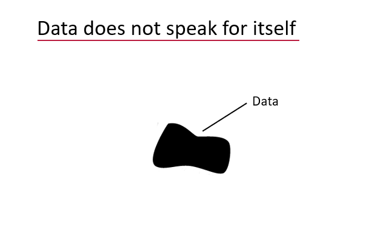

Semantics is a branch of linguistics and logic concerned with meaning.
The Semantic Engine is a set of tools helping researchers generate machine-accessible meaning for their data.
One of the first tools we are developing will help researchers more easily create and use data schemas.
Data without context is hard to understand and use:
When additional information is supplied, data can be understood better within its context. The context is often supplied by metadata which means it is data about data. A schema is an example of a piece of metadata that can be supplied to help put data in context and make the data more understandable and usable.

A data schema is metadata that adds context to your data to help others understand and use the data. Data must be structured to be understood and a schema describes the structure of the data.
To help you understand and use the data you need a well documented data schema. A good schema will tell you what the column labels are (the attributes) and what they mean. It will tell you the units and it will tell you what type of data is in each column.
Each column in a dataset is an attribute and a schema will descibe the data contained in each column (each attribute). There are multiple things you can describe about each data attribute, for example what are the units for the data in a column? What format should the data take (especially important for dates). The more features that are used to describe a data attribute, the more information a data user will have to help them understand and use the data.

When you know what data you are going to collect, or have a dataset that you have already collected, you can add context to your data by writing a schema using the